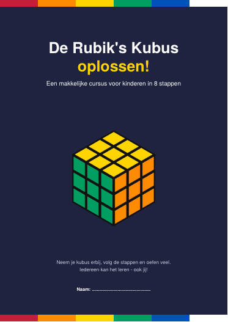
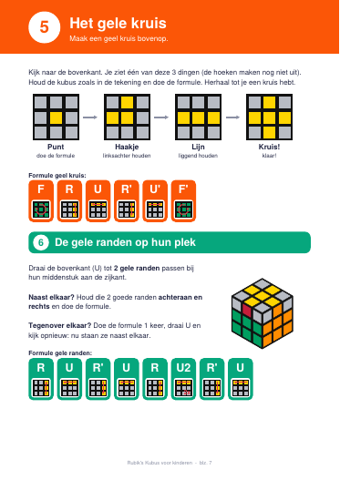

Download de cursus (PDF)
9 bladzijden met tekeningen, een spiekbriefje en een diploma.
Wat leer je?
- Het madeliefje
- Het witte kruis
- De witte hoeken
- De middenlaag
- Het gele kruis
- De gele randen op hun plek
- De gele hoeken op hun plek
- De gele hoeken draaien
Elke formule staat in blokjes met een tekeningetje van de draai, zodat kinderen ze zelf kunnen volgen.
Een kijkje binnenin

